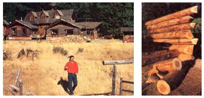
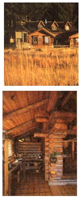
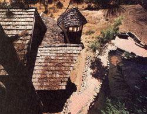
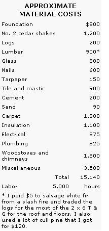

How I built eight houses and became financially independent.
My situation was this: I'd just gotten home from spending 1968, '69, and '70 with a band of marines in a crazy Asian war. It wasn't easy to drop back into America in the early '70s. Vietnam wasn't a real popular thing to have done, and a high and tight haircut was a real turnoff to most people.
They say busy hands are happy hands, so I decided to spend some time with myself-building. I'd saved a little money (not much), but getting a construction loan proved to be impossible. Low-interest loan programs for low-income housing weren't available to veterans, because we were eligible for veteran loans . . . at six times the interest rate.
The real problem, though, proved to be my job: After the three-year Asian interlude, I'd gone back to smoke jumping for $4 per hour before taxes. Parachuting into forest fires is seasonal work and is considered high-risk. People behind desks decided that my government job was too undependable to merit a vet loan. Banks in the area pretty much laughed at me: no "real" job, little money, no conventional plans.
It was a cinch that I was the only one who was going to bankroll my therapy. Despite my lack of funds, I did have a couple of valuable assets:
1. Time-lots of it. Smoke jumping kept me real busy in the summer, but the government laid me off every winter.
2. Coping skills. I had a patience earned in the Orient, where nothing ever went right. Disappointments and setbacks were constant there. The experience gave me a pick-themup-and-put-them-down, hang-in-there, marathon-runner, no-end-in-sight disposition . . . which is just what I needed to stand in the rain, learn to build by trial and error, and eventually accomplish something.
With my cash-to-time ratio, and with the forests of Oregon around me, log building was the only logical choice. There weren't many how-to books on the subject back then, and I didn't get much wisdom or encouragement from my neighbors, so I just went to work.
Three houses later, I'd learned a few things. I had one residence I could consider a success and two others that were at least sound, comfortable, and rentable. The time seemed right to get ambitious.
Life is full of tradeoffs, and building a log house is a great example. Log houses are very low-cost to build if you have a source of trees. But if time is money, they're the most expensive kind of structure to put up.
I can build a quality, 24' X 47', two-floor log house for about $5,000 in materials: $2 or $3 per square foot. It really isn't technically difficult. You can do it too, if you're prepared to work. But you'd better find out whether you've got the right disposition.
There's a simple test that separates those who think they want to build a log house from those who might actually do it. Go out and peel the bark off a 50' log with an ax.
Believe me, that first one isn't easy, but I won't even waste my breath on anyone not willing to hang in there and defeat that one log. I've watched some struggle through one pass down the side of a log and quit in disgust. I admire pluggers with a sense of humor; they make great log-house builders.
I'm always amazed by people who are so good at planning that they can figure out exactly how many nails they'll need to build a house. I'm just the opposite. When I look at a chunk of land, the building site jumps out at me. A vague image of a house crosses my mind . . . and I start my chain saw. What actually evolves is a product of the wind, the rain, the sun, the moon, and the stars. The project sort of takes over-asking for a log here, a window there-and before I know it I've built a house. I end up feeling like I'm just along for the ride.
That's what happened with the log mansion, as people like to call it: It took over and spread itself across a hillside for about 4,500 square feet. With all the wings, alcoves, and lofts, it might make a great lodge for conventions or a fine home for a family with several sets of teenagers, in-laws, outlaws, and a new crop of toddlers. When I'm in Oregon, I live on the third floor of the rear wing. I rent the main house and the lower two stories of the rear. Five hundred square feet is plenty for me.
You can get the basic layout from the floor plan, but there are so many levels and stories that an explanation may help. The walls are 40 logs high on the wing back in the trees. That makes it four stories tall, if you count the loft in the third story as a floor. The front part is split-level-the kitchen and east front room are two steps lower than the living room-and there's a second floor with a cathedral ceiling in the center. Six full logging truck loads of 50' logs went into the structure-enough to build six 1,500-square-foot houses.
There are over 100 windows, half of them operable. I made all the sashes on a friend's table saw and bought most of the glass used. The three living units have a total of five woodstoves, three bathrooms, and three kitchens. Most of the kitchen and bathroom counters and floors are tile, and the few nonlog interior partitions (for plumbing runs) are paneled with tongue-and-groove boards.
There's a stream that runs by in front during the winter, a pond just to the west that I stock with trout, and a couple-acre lake that I'm coaxing along. (Ponds are currently my greatest construction interest.)
I did most of the building solo, but one day this mild-mannered kid not old enough to drink a beer came by and charged into the work like a horse. He hung in there with me until we'd added two stories to the back and beat the fall storms with the roof. That one kid was worth four or five normal human beings. I can work hard and long but nothing like my friend Doug Ballou. What a lesson in tigerhood that guy was!
The log mansion may be impressive, but it's not very practical. You could build eight comfortable log homes in the time it took to put it up. In fact, if nothing else, the building might stand as a monument to why you ought to have a plan to follow, rather than just being pulled around behind a runaway chain saw.
I think log houses are good for Americans and America. In particular, they're good for people like me who are poor but have lots of "can-do" spirit. But they're also good in general.
Our forests-I'm not talking about wilderness areas, which should remain pristine-often need to be thinned of the sorts of trees that are perfect for building log houses. Right now, too many of our forests are going stale.
I also think that log houses are underrated from an energy standpoint. All the so-called insulation experts ought to compute things over again or put log buildings in a separate category. I've been in large log houses in Alaska heated only by lousy Franklin woodstoves, and they were very, very warm.
Finally, building a log house is a worthwhile personal goal. It's a perfect project for a loving and sharing couple. As the house gets built, the character and strength of the relationship should grow.
Log building is also good therapy for an individual who needs to heal up and sort things out after going though a tragic ordeal or disappointment-the sort of thing that could eat away at your soul. At such times, inactivity and an overactive imagination-fueled by hate, self-pity, drugs, alcohol, smoke, and negativity-can be your worst enemies. In the end, positive efforts, coping skills, and, ultimately, a house will stand as monuments to the goodness within you.
According to all the experts in real estate and finance, I've done everything wrong. Yet, as a bottom-rung manual laborer, I've come to own 10 rentals free and clear-a situation that, because my monetary needs are small, gives me financial independence. For me, my way has worked OK. I just hope that I've provided you with something to make your quests, your life, a bit better .
EDITOR'S NOTE: Troop has written a handbook describing his building techniques and all eight of his houses in detail. Troop's Log Building Manual runs almost 50 pages and contains over 30 technical illustrations and numerous photos of his projects. To take advantage of MOTHER's special limited-time holiday prices on these and other plans, turn to page 88.
Related Articles:
A Practical, Two-Floor House
|
 You have to saw and peel a lot of trees to make a log house... especially one like Troop's 4,500-square-foot mastetpiece. |
 Troop's multi-level mansion rises 40 logs high in back and required six logging truck loads of 50' logs. |
 The rear wing is four stories high and contains Troop's own apartment. The trout pond in back has an outlet that runs between the main house and the rear wing, underneath a dosed-in bridge. |
|
 |
|
|